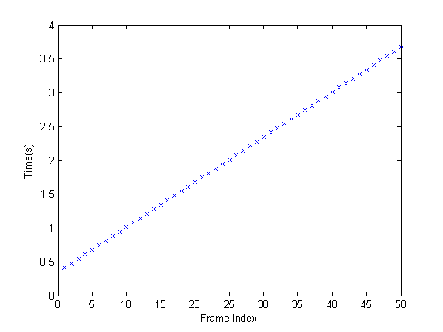
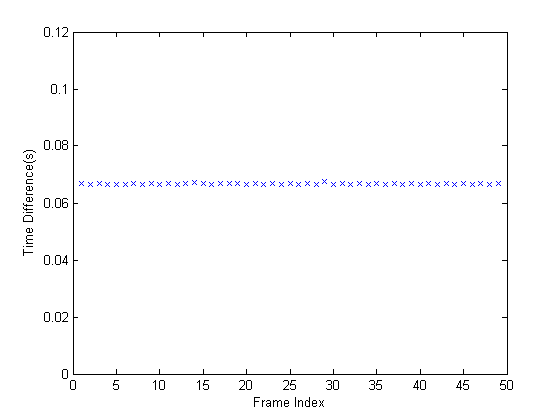

Determining the Rate of Acquisition
Using the timestamps provided by the GETDATA function, the device frame rate can be estimated using MATLAB functions.
Overview
Step 1: Access and Configure a Device.
Create a video input object and access its video source object to configure the desired acquisition rate. The acquisition rate is determined by the value of the device specific FrameRate property of the video source object.
Note, since FrameRate is a device specific property, not all devices may support it.
% Access an image acquisition device. vidobj = videoinput('winvideo', 1);
% Configure the number of frames to log.
vidobj.FramesPerTrigger = 50;% Skip the first few frames the device provides % before logging data. videobj.TriggerFrameDelay = 5;
% Access the device's video source.
src = getselectedsource(vidobj);% Configure the device's frame rate (frames per second).
actualRate = 15.15;
src.FrameRate = num2str(actualRate);Step 2: Log and Retrieve Data.
Initiate the acquisition and retrieve the logged frames and timestamps.
% Start the acquisition.
start(vidobj)% Wait for data logging to end before retrieving data.
wait(vidobj, 10);% Retrieve the data and timestamps.
[frames, timeStamp] = getdata(vidobj);Step 3: Calculate the Acquisition Rate.
By plotting each frame's timestamp, one can verify that the rate of acquisition is constant.
% Graph frames vs time. plot(timeStamp,'x') xlabel('Frame Index') ylabel('Time(s)')
The average time difference can also be determined to compare to the expected acquisition rate.
% Find the time difference between frames.
diffFrameTime = diff(timeStamp);% Graph the time differences. plot(diffFrameTime, 'x'); xlabel('Frame Index') ylabel('Time Difference(s)') set(gca, 'ylim', [0 .12])
% Find the average time difference between frames.
avgTime = mean(diffFrameTime)
avgTime =
0.0667
% Determine the experimental frame rate.
expRate = 1/avgTimeexpRate = 15.0012
Comparing the time difference between the experimental and the known frame rate, the percent error can be calculated. Since a generic USB web camera is being used as the acquisition device, it is to be expected that the actual device frame rate will fluctuate.
% Determine the percent error between the determined and actual frame rate.
diffRates = abs(actualRate - expRate)
diffRates =
0.1488
percentError = (diffRates/actualRate) * 100
percentError =
0.9824
% Once the video input object is no longer needed, delete % it and clear it from the workspace. delete(vidobj) clear vidobj